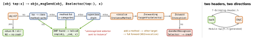

swift · folio
In one line: An ObjC call is a message: [obj sel] becomes
objc_msgSend(obj, @selector(sel)), resolved at runtime in the
receiver’s class — hence nil messaging, categories, KVO, swizzling. Swift enters
that world via @objc (visible to the runtime) and dynamic
(dispatched through it), on NSObject-rooted classes.
Download PDF Print view LaTeX source


ObjC
SEL= interned name;IMP= C fn(id self, SEL _cmd, ...). Cached lookup, never inlined. nil receiver returns zero — a silent bug, not a crash.id= any object, unchecked (Swift:Any).- Properties: default
atomic(accessor lock only, not thread safety).strongown ·weakzeroing ·copyforNSString/blocks (caller may pass a mutable one) ·assignscalars only (an object dangles; delegates areweak) ·unsafe_unretainednot zeroed. - Blocks capture locals by value at creation and retain captured objects;
__block= by reference, mutable. Born on the stack, ARC copies to heap when stored.self→block→selfcycle: weak/strong dance. - Categories add methods (not ivars — use associated objects) to any class. Same selector twice = undefined winner ⇒ prefix.
@interface C ()= private extension in.m. - KVC
valueForKeyPath:@"a.b",@sum.x; bad key →NSUnknownKeyException. KVO isa-swizzles the object to hiddenNSKVONotifying_Cwhose setter wrapswill/didChangeValueForKey:; fires on the mutating thread. - Swizzle with
method_exchangeImplementationsin+load+dispatch_once(+load: pre-main, per class and category;+initialize: lazy, may run twice).
Example
@property (nonatomic, copy) NSString *title;
@property (nonatomic, weak, nullable) id<PlayerDelegate> delegate;
@property (nonatomic, copy) void (^onEnd)(void);
__weak typeof(self) weakSelf = self;
self.onEnd = ^{
__strong typeof(weakSelf) s = weakSelf; // alive for the body
if (!s) return;
[s.delegate playerDidEnd:s]; }; // nil delegate: no-opfinal class Model: NSObject {
@objc dynamic var progress = 0.0 // KVO works
@objc var name = "" // visible, NOT KVO-safe
@objc(loadWithID:) func load(id: Int) {} }
let token = model.observe(\.progress, options: [.new]) { m, c in
print(c.newValue as Any) } // hold token; its deinit removesObjC → Swift import
id | Any | Class | AnyClass |
instancetype | Self | SEL | Selector |
BOOL | Bool | block | @convention(block) closure |
NSInteger | Int | category | extension |
Interop
@objcexposes (selector,-Swift.h) but may still be vtable-called;dynamicforcesobjc_msgSend⇒ KVO, swizzling.@objcMembers= all members. Swift 4 (SE-0160) stopped inferring@objc.@objcclass must inheritNSObject;@objc protocolis class-only, allowsoptional.- Bridging header: app/test targets (frameworks use umbrella header).
-Swift.h:internal+ in an app,publicin a framework;#importin.m,@classin.h. nonnull→T·nullable→T?· unannotated→T!; useNS_ASSUME_NONNULL_BEGIN.NS_SWIFT_NAMErenames ·NS_REFINED_FOR_SWIFT→__name·NS_ENUM→enum (@unknown default) ·NS_OPTIONS→OptionSet·NSArray<NSString *>→[String](else[Any]) ·NSError **↔throws.- Can’t cross: structs (bar bridged
String/Data/URL…), enums with payloads (only@objc enum E: Int), generics, tuples,Int?(useNSNumber?), PATs / Swift-only protocols. Default args cross without defaults.
Traps
@objcalone: Swift callers use the vtable and bypass KVO’s setter or a swizzled IMP — observation silently never fires.- Swizzling: global, order-dependent,
_cmdchanges; on an inherited method it swaps the superclass’s (class_addMethodfirst); breaks across iOS versions. [Int]→NSArrayboxes each element inNSNumber;String↔NSStringmay transcode — costly in a loop.- Overloads collide as one selector —
@objc(name:). No@objcon an IB action → “unrecognized selector”. - Header says
nonnull, ObjC returns nil → Swift crashes on use.@Publishedis Combine, not KVO.
Remember
“@objc shows, dynamic sends.” nil eats messages; categories add methods not storage; KVO = a secret subclass.